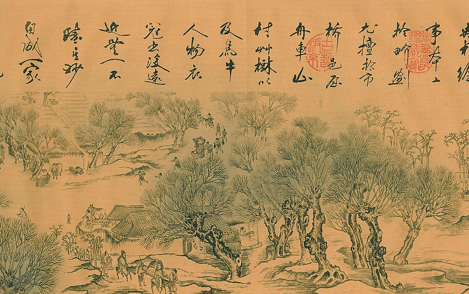
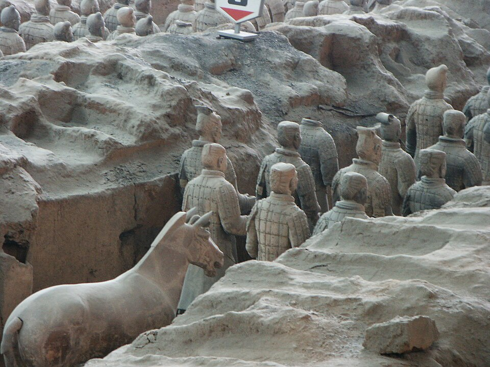
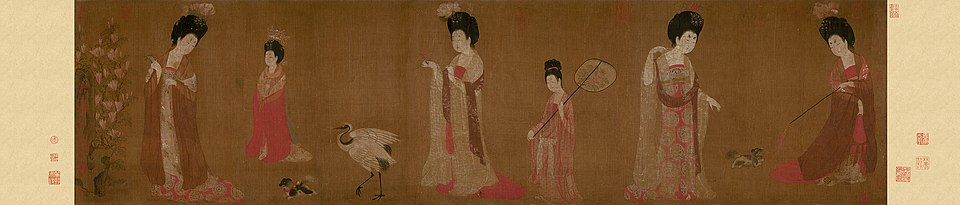
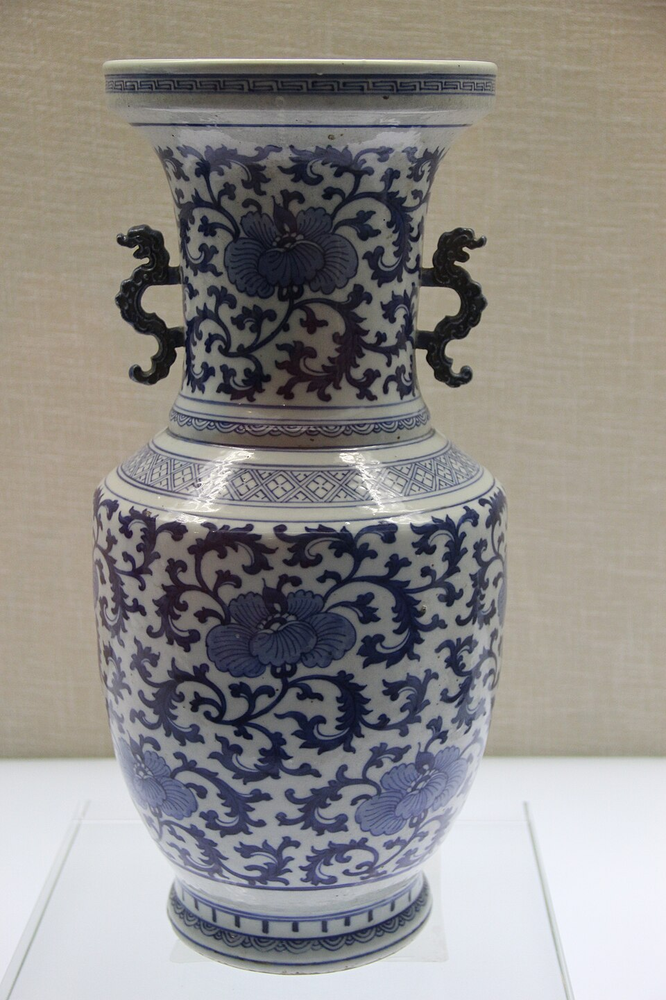
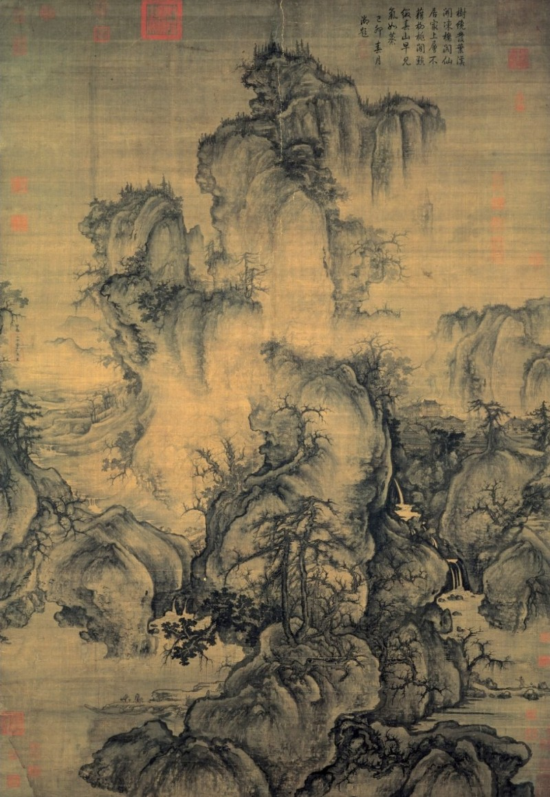
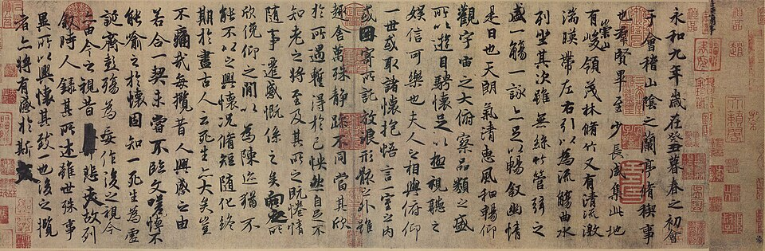
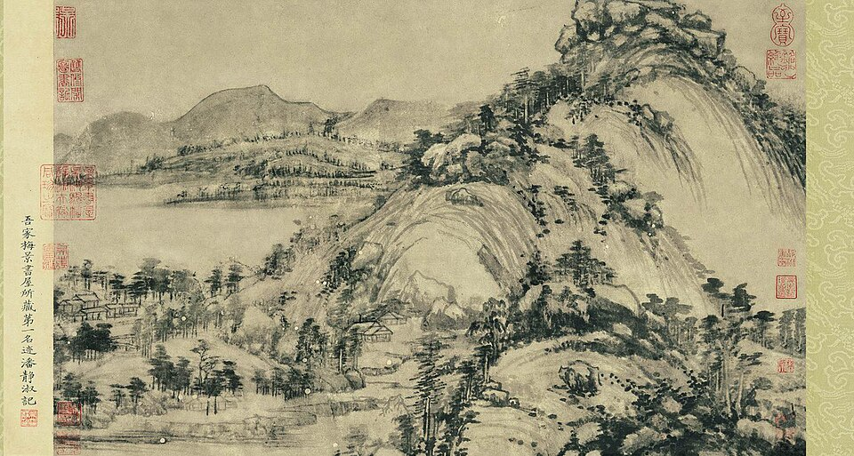
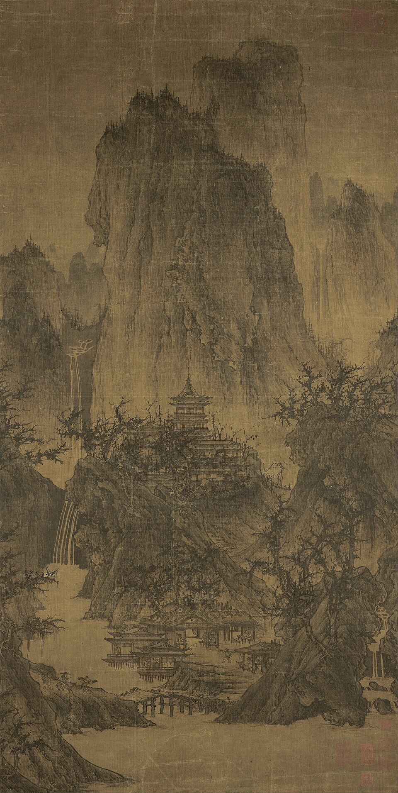

🏆 Meesterwerk: Along the River During the Qingming Festival
De meest beroemde Chinese scroll painting - 5 meter stadsleven in 12e eeuw Kaifeng

Zhang Zeduan, 12e eeuw · Song Dynasty · Handscroll, inkt op papier
🎨 STIJLFIGUREN & THEMA'S
📜 Kalligrafie
Schrift als kunst: Karakters met penselen. Ritme, balans, energie (qi).
🏔️ Landschap
Shan shui: Bergen en water. Mens klein, natuur groot. Taoïstische visie.
🐉 Symboliek
Dierentekens: Draak = keizer, Kraanvogel = lang leven, Vis = overvloed.
🖌️ Techniek
Gongbi vs Xieyi: Precies gedetailleerd vs. spontane expressie.
🖼️ TOP 10 MEESTERWERKEN
1. Along the River During the Qingming Festival (12e eeuw)
Zhang Zeduan · Song Dynasty · Handscroll, inkt op papier · 528 cm lang
Achtergrond: De beroemdste Chinese schilderij. Toont het dagelijks leven in de hoofdstad Kaifeng tijdens het Qingming festival.
🔍 STIJLANALYSE
Compositie: Handscroll - van rechts naar links bekijken. Geleidelijke overgangen.
Detail: 814 mensen, 60 dieren, 28 boten, 30 gebouwen. Alle lagen van de samenleving.
Techniek: Gongbi - precies, gedetailleerd penselenwerk.
2. Travelers Among Mountains and Streams (ca. 1000)
Fan Kuan · Song Dynasty · Hanging scroll, inkt op papier · 206 cm hoog

Achtergrond: Het definitieve voorbeeld van Noordelijke Song landschapsschilderkunst. Reizigers zijn klein tegenover de enorme natuur.
🔍 STIJLANALYSE
Schaal: Mens klein, natuur groot. Taoïstische nederigheid.
Compositie: Drie plan: voorgrond, midden, achtergrond. Centrale berg domineert.
Techniek: Raindrop texture strokes voor rotsen.
3. Terracotta Army (ca. 210 v.Chr.)
Qin Shi Huang Mausoleum · Xi'an · ~8000 levensgrote figuren

Achtergrond: Eerste keizer Qin Shi Huang liet een heel leger van klei maken om hem in het hiernamaals te beschermen.
🔍 STIJLANALYSE
Realisme: Elke soldaat heeft uniek gezicht. Echte wapens, harnassen.
Schaal: 8000+ soldaten, paarden, wagens. Drie putten.
Techniek: Onderdelen apart gemaakt, dan geassembleerd en beschilderd.
4. Court Ladies Adorning Their Hair with Flowers (ca. 750)
Zhou Fang · Tang Dynasty · Handscroll, kleur op zijde · 46 cm hoog

Achtergrond: Tang Dynasty hofcultuur op zijn hoogtepunt. Weelderige vrouwen in rustige momenten.
🔍 STIJLANALYSE
Figuren: Volle, ronde gezichten - Tang ideaal van schoonheid. Rijke gewaden.
Compositie: Vrouwelijke elegance, informeel. Geen narratief.
Kleur: Rood, wit, groen. Verfijnde tinten.
5. Six Persimmons (13e eeuw)
Mu Qi · Song Dynasty · Hanging scroll, inkt op papier · 36 cm hoog

Achtergrond: Zen boeddhistische monnik. Eenvoudigste en meest diepzinnige stillife ooit.
🔍 STIJLANALYSE
Minimalisme: Zes vruchten, witte achtergrond. Niets overbodigs.
Techniek: Xieyi - spontaan, suggestief. Variatie in inkt tinten.
Filosofie: Zen - elk moment is compleet. Gewone dingen zijn heilig.
6. Porselein Vaas met Draken (18e eeuw)
Qing Dynasty · Famille Rose · Keizerlijke porselein werkplaatsen

Achtergrond: Chinees porselein was wereldwijd het meest gewilde luxeproduct. Qing perfectioneerde de kunst.
🔍 STIJLANALYSE
Materiaal: Kaolien klei, 1300°C. Doorzichtig, klokgeluid.
Decoratie: Famille Rose - roze, groen, geel email. Draak motief.
Techniek: Onderglazuur blauw + email bovenop. Meerdere brandingen.
7. Early Spring (1072)
Guo Xi · Song Dynasty · Hanging scroll, inkt op zijde · 158 cm hoog

Achtergrond: Guo Xi was hofschilder. Schreef "The Great Message of Landscape Painting".
🔍 STIJLANALYSE
Atmosfeer: Mist, wolken, nevel. Seizoenssfeer - lente ontwaking.
Diepte: Atmospherisch perspectief. Drie plan duidelijk.
Techniek: Crab-claw takken, rots texturen.
8. Orchid Pavilion Gathering (353)
Wang Xizhi · Jin Dynasty · Kalligrafie · Origineel verloren

Achtergrond: De belangrijkste kalligrafie in Chinese geschiedenis. Wang Xizhi schreef het tijdens een feest.
🔍 STIJLANALYSE
Schrift: Running Script (Xingshu) - vloeiend, spontaan.
Expressie: Elk karakter uniek. Emotie zichtbaar in penselenstreken.
Invloed: Alle latere kalligrafen bestudeerden dit werk.
9. Dwelling in the Fuchun Mountains (1350)
Huang Gongwang · Yuan Dynasty · Handscroll, inkt op papier · 690 cm lang

Achtergrond: De beroemdste Yuan landschap. Huang schilderde het voor een vriend, over meerdere jaren.
🔍 STIJLANALYSE
Stijl: Literati - schilderen voor zelfexpressie, niet voor geld.
Techniek: Droge penselen, lichte inkt. Subtiel, intellectueel.
Geschiedenis: Doormidden gesneden, twee helften in verschillende musea.
10. Shanshui zonder Mensen (11e eeuw)
Li Cheng · Song Dynasty · Hanging scroll, inkt op zijde

Achtergrond: Li Cheng was een van de drie grote landschapsschilders van de Noordelijke Song.
🔍 STIJLANALYSE
Compositie: Uitgestrekte vlaktes, verre bergen. Leegte als element.
Techniek: Spijker-achtige texturen voor rotsen.
Filosofie: Natuur zonder mens - zuivere meditatie.
📚 TIJDSGEEST CONTEXT
🌍 POLITIEK PERSPECTIEF
De Chinese kunstgeschiedenis is onlosmakelijk verbonden met de opkomst en ondergang van keizerlijke dynastieën, waarbij politieke structuren direct de productie, thema's en technieken van kunst bepaalden. De Han-dynastie (206 v.Chr.-220 n.Chr.) legde de basis voor een gecentraliseerd keizerrijk dat de kunst stimuleerde als instrument van staatspropaganda. De beroemde Han-grafkelders met hun jade-begrafenispakken (yu yi - jadeplakjes verbonden met goud- of zilverdraad) en terra cotta beelden weerspiegelden de macht en rijkdom van de keizerlijke klasse. De jade-techniek - polijsten met abrasieve zanden en bamboe-tools - vereiste duizenden uren, wat de politieke controle over arbeidskracht demonstreerde. De lacquerware - geschilderd met lak gemaakt van vermiljoen, ijzeroxyde en kwarts - vertoonde abstracte wolkenmotieven (yunqi) die de keizerlijke connectie met de kosmos visualiseerden. De Zijderoute, geopend onder Han-keizer Wu (141-87 v.Chr.), introduceerde glassen, goud en textiel uit Perzië en Rome, wat leidde tot nieuwe materiaal-culturele synthese in Chinese kunst.
De Tang-dynastie (618-907) markeerde de gouden eeuw van China, waarbij keizers zoals Taizong en Xuanzong de kunsten activeerden via keizerlijke ateliers. De Sancai-driekleurige keramiek - gegoten met loodglazuur in amber, groen en crème - beeldde buitenlandse handelaren, kamelen en paarden af, wat de verbinding met de Zijderoute documenteerde. De Tang-portretkunst - kleurrijke schilderijen van keizers, generaals en hofdames op zijde - gebruikte gongbi-precisiestijl (fijne penseelstreken, duidelijke contouren) om politieke autoriteit en hiërarchie te verbeelden. De Tang-kalligrafie - Yan Zhenqing's 'Yan style' met dikke, krachtige streken - werd politiek symbool van loyaliteit en integriteit tijdens de An Lushan-rebellie (755-763). De Tang-boeddhistische sculptuur - Longmen-grotten (493-759) met duizenden Boeddha-figuren in steen - werd gefinancierd door keizerlijke families als demonstratie van vroomheid en macht.
De Song-dynastie (960-1279) bracht een fundamentele verschuiving: keizers waren niet alleen politieke leiders, maar ook kunstenaars en intellectuelen. Keizer Huizong (1082-1135) was zelf een meesterlijk kalligraaf (ontwikkelde de 'Slank Goud' script-stijl) en schilder (vooral bird-and-flower schilderijen) die de keizerlijke schilderacademie oprichtte. De landschapsschilderkunst (shan shui) werd verheven tot de hoogste kunstvorm, waarbij schilders zoals Fan Kuan (ca. 960-1030) en Guo Xi (ca. 1020-1090) hun werk signeerden als intellectuele prestaties. De hangende scroll-techniek - inkt op papier of zijde, bevestigd aan houten rollers met zijden randen - maakte verticale presentatie mogelijk, wat de monumentale berglandschappen accentueerde. De textuur-technieken - 'raindrop texture' (yudian cun) voor rotsen, 'hemp-fiber texture' (map cun) voor heuvels - verbeelden verschillende geologische structuren, wat de Confuciaanse nadruk op observatie en studie weerspiegelde. De Noordelijke Song (960-1127) produceerde grootschalige landschappen zoals Fan Kuan's 'Travelers Among Mountains and Streams' (ca. 1000), waarin reizigers klein zijn tegenover de enorme natuur - een taoïstische nederigheid die de beperkte macht van de staat erkende. De Zuidelijke Song (1127-1279), na de val van het noorden aan de Jin, produceerde intiemere landschappen zoals Ma Yuan's 'On a Mountain Path in Spring' (ca. 1200), met een-hoek composities en mistige atmosferen die nostalgie en verlies verbeelden.
De Ming-dynastie (1368-1644) centraliseerde de kunstproductie via keizerlijke porseleinfabrieken in Jingdezhen, waar het beroemde blauw-wit porselein werd geproduceerd voor zowel binnenlands als exportgebruik. De techniek - onderglazuur kobalt-blauw schilderen op kaolien klei, dan bedekken met transparant glazuur, dan bakken op 1300°C - vereiste precisie en chemicaliënkennis. De kobalt-techniek, oorspronkelijk geïmporteerd uit Perzië (Samarra-blue), werd in China verfijnd tot diep, helder blauw dat niet vervaagde. De Ming-draak-motief - Vijf-klauw draken voor keizerlijk gebruik, vier-klauw voor prinsen, drie-klauw voor edelen - was een politek codeerde systeem van rang. De Ming-architectuur - Verboden Stad (1406-1420) met 9.999 kamers, gouden daken, rood gelakte houten kolommen - visualiseerde keizerlijke suprematie en kosmische orde via sacrale numerologie (negen = keizerlijk, rood = geluk, goud = macht). De Ming-meubels - huanghuali hout, joinery zonder spijkers, minimalistisch design - bereikten een esthetiek van eenvoud en perfectie die de Confuciaanse waardering voor functionaliteit verbeeldde.
De Qing-dynastie (1644-1912) breidde dit systeem uit, waarbij keizers zoals Kangxi (1661-1722) en Qianlong (1735-1796) persoonlijk toezicht hielden op artistieke productie. De keizerlijke verzameling van Qianlong omvatte meer dan een miljoen kunstvoorwerpen, waaronder schilderijen, kalligrafie, jade en brons. Deze verzameling fungeerde als politiek instrument: het demonstreerde de culturele suprematie van de Qing-heersers en hun verbinding met de confuciaanse traditie. De Qing-porselein-technieken - famille rose email (roze, groen, geel), fencai (bleke kleuren), yangcai (westerse kleuren) - introduceerden Europese pigmenten en perspectief-technieken via Jezuïetenmissionarissen aan het hof. De Qing-landschapsschilderkunst - 'Individualist' schilders zoals Shitao (1642-1707) en Bada Shanren (1626-1705) - reageerde tegen de orthodoxie van keizerlijke smaak met expressionistische, persoonlijke stijlen, wat de politieke spanning tussen conformisme en rebellie verbeeldde. De val van het keizerrijk in 1912 markeerde het einde van dit systeem, maar de artistieke tradities bleven voortleven in de republikeinse en communistische periodes.
📚 LITERAIR PERSPECTIEF
De Chinese literatuur en kunst zijn diep verweven via het concept van wen (cultuur/beschaving), waarbij tekst en beeld elkaar versterken via unieke kalligrafische technieken en visuele stijlfiguren. De Confuciaanse klassieken - de Vijf Klassieken (Boek der Documenten, Boek der Oden, I Ching, Lenten en Herfstannalen, Riten van Zhou) en Vier Boeken (Analecten, Mencius, Grote Lering, Doctrine van het Midden) - vormden de basis voor opleiding en examens, wat direct invloed had op kunstenaars. Kalligrafie werd beschouwd als de hoogste kunstvorm, waarbij meesters zoals Wang Xizhi (303-361) hun penseelstreken als intellectuele en morele expressie zagen. De Orchideeën Paviljoen Preface (353) - Xing Shu (semicursief script) - wordt nog steeds beschouwd als het grootste kalligrafische werk aller tijden, met spontane, vloeiende streken die de vrolijke sfeer van een lentedag verbeelden. De techniek - kwast van geitenhaar, inkt van pijnboom-roet, papier van mulberry bast - vereiste decennia van oefening, waarbij de 'Flying White' (feibai) tekstuur (droge penseel dat spleet) de snelheid en energie van de hand zichtbaar maakte.
De Tang-poëzie bereikte ongekende hoogten met dichters zoals Li Bai (701-762) en Du Fu (712-770), wiens werk direct schilderijen en kalligrafie beïnvloedde. Het concept van shi-qing-hua-yi (poëzie, schilderkunst en kalligrafie als eenheid) ontwikkelde zich in de Song-periode, waarbij schilderijen werden voorzien van gedichten en kalligrafie. De literati-schilders (wenren) zoals Su Shi (1037-1101) beschouwden schilderkunst als een intellectuele bezigheid, niet als ambachtelijk werk. Su Shi's 'Ode to the Red Cliff' (1082) - een gedicht over de natuur en menselijke vergankelijkheid - werd talloze keren geschilderd, waarbij de sumi-e inktwash-techniek de mistige atmosfeer van de Yangtze-rivier verbeelde. De Bamboo Paintings van Wen Tong (1018-1079) - xieyi (schets-idee) stijl met snelle, expressieve streken - combineerden kalligrafische precisie met taoïstische spontaniteit, waarbij de in verschillende inktintensiteiten (van diep zwart tot lichtgrijs) de diepte en textuur van bamboo suggereerden. De landschapsschilderijen van Huang Gongwang (1269-1354), zoals 'Dwelling in the Fuchun Mountains' (1350), werden gecombineerd met poëtische teksten die de emotionele lading van het werk versterkten - de handscroll-techniek (horizontale rollen, van rechts naar links bekijken) maakte verhalende progressie mogelijk, waarbij tekst en beeld elkaar afwisselden.
De romanliteratuur van de Ming-periode, zoals Dream of the Red Chamber (1791) van Cao Xueqin, bevatte uitgebreide beschrijvingen van kunstobjecten en architectuur, wat de sociale rol van kunst in de elitecultuur documenteerde. De keizerlijke encyclopedie Siku Quanshu (1782) onder Qianlong catalogiseerde meer dan 10.000 werken, waaronder uitgebreide secties over kunsttheorie en kunstgeschiedenis. De Ming-houtsnede-illustraties - block-printed afbeeldingen in romans en toneelstukken zoals 'Romance of the West Chamber' (1498) - combineerden verhaallijn met visuele representatie, waarbij de single-line cutting-techniek (één lijn per snede) fijne details mogelijk maakte. De thema's - liefde, familie-conflict, sociale hiërarchie - werden visueel vertaald via interieuren met onzichtbare daken, personages in rang-kleding, symbolische objecten (rozen, veren). De Qing-poëzie - ci (lyrische gedichten) - werd vaak geïnspireerd door schilderijen, zoals Nalan Xingde's (1655-1685) ci over landschappen, waarbij de ritmische structuur van de poëzie (lange en korte regels) de visuele compositie van het schilderij weerspiegelde. Deze tekst-beeld synthese - uniek voor de Chinese traditie - vereiste dat kunstenaars zowel literair als visueel geschoold waren, wat de intellectuele status van kunst in de Chinese samenleving bevestigde.
🧠 PSYCHOLOGISCH PERSPECTIEF
De Chinese kunst weerspiegelt fundamentele psychologische concepten uit het confucianisme, taoïsme en boeddhisme, waarbij elke filosofische traditie unieke mentale toestanden en esthetieke ervaringen creëerde die direct vertaald werden naar kunstvormen, thema's en technieken.
Het confucianisme benadrukte orde, hiërarchie en morele verantwoordelijkheid, wat zich vertaalde in formele portretkunst en ceremoniële objecten. De keizerlijke portretten van de Tang-dynastie - geschilderd met gongbi precisie-stijl (fijne lijnen, minutieus detail) - verbeeldden de keizer niet als individu, maar als kosmische autoriteit: symmetrische compositie, frontale pose, formele gewaden. De Psychologische functie was ontzag en loyaliteit inspireren bij de kijker - het portret was een visueel manifest van het Hemels Mandaat. De bronzen rituele vaten van de Shang- en Zhou-dynastieën, met hun taotie-maskers (abstracte monster-gezichten), functioneerden als psychologische focus-objecten tijdens voorouderverering - de angstaanjagende visage versterkte de religieuze ervaring en de sociale hiërarchie. De Confuciaanse 'Vier Heren' - pruim (winter-hardheid), orchidee (elegantie), bamboe (flexibiliteit), chrysant (doorzettingsvermogen) - werden psychologische symbolen van deugd, herhaaldelijk afgebeeld in schilderkunst en kalligrafie als visuele mantras voor morele cultivatie.
Het taoïsme bracht de nadruk op natuurlijkheid, spontaneïteit en harmonie met de natuur, wat leidde tot de ontwikkeling van landschapsschilderkunst (shan shui - bergen en water). De psychologische ervaring van yin-yang dualiteit - berg (yang: vast, mannelijk, licht) en water (yin: vloeibaar, vrouwelijk, donker) - werd vertaald naar compositorische balans in schilderijen. De Noordelijke Song landschappen van Fan Kuan (ca. 960-1030) toonden enorme bergen die de kijker overweldigden, wat een gevoel van kosmische nederigheid opriep - de taoïstische realisatie van menselijke kleinheid. De leegte (liubai - wit laten) in Chinese schilderkunst was niet 'niets', maar een psychologische ruimte die de verbeelding van de kijker activeerde en de taoïstische notie van 'wu' (non-being) verbeeldde. De xieyi ('schets-idee') stijl, gekenmerkt door snelle, expressieve penseelstreken, weerspiegelde het taoïstische concept van wu wei (niet-handelen, natuurlijk handelen) - de kunstenaar liet het penseel leiden in plaats van het te controleren, wat een staat van flow en spontaneïteit bereikte. De literati-schilders van de Yuan-dynastie, zoals Ni Zan (1301-1374), schilderden sobere, minimalistische landschappen met weinig detail en veel leegte, wat hun afkeer van de Mongoolse overheersing en hun verlangen naar morele puurheid uitdrukte - de stijl zelf was een psychologisch statement.
Het boeddhisme, geïntroduceerd vanuit India in de 1e eeuw, bracht nieuwe psychologische concepten: leegte (sunyata), meditatie (dhyana) en compassie. De Chan/Zen-traditie ontwikkelde zich in China (6e eeuw) en beïnvloedde kunst via de nadruk op directe ervaring boven intellectuele analyse. De Zen-kalligrafie - snel, spontaan, zonder correctie - verbeeldde de meditatieve staat van de kalligraaf: één penseelstreek, één moment van helderheid. De Zen-schilderkunst van Mu Qi (ca. 1200-1270) - 'Six Persimmons' (zes kaki's op een witte achtergrond) - bereikte extreme minimalisme waarbij elke vrucht uniek was, wat de boeddhistische notie van impermanentie en uniekheid verbeeldde. De Guanyin-afbeeldingen, oorspronkelijk afgeleid van de mannelijke Indiase Avalokiteshvara, werden in China getransformeerd tot een vrouwelijke bodhisattva van compassie - een psychologische aanpassing die de Chinese waardering voor moederlijke zorg verbeeldde.
Het concept van qi (vitale energie) was centraal in de Chinese kunsttheorie en -praktijk. Een schilderij werd als succesvol beschouwd als het de qi van het onderwerp wist te vangen - niet de fysieke vorm, maar de levenskracht. Gu Kaizhi (ca. 344-405), de beroemdste schilder van de Jin-dynastie, stelde dat een portret niet alleen de fysieke gelijkenis moest tonen, maar ook de 'shen' (geest) van de persoon. Hij beroemde zich erop dat hij 'de ogen pas als laatste schilderde', omdat de ogen de poort naar de ziel waren. Deze psychologische benadering verschilde fundamenteel van de westerse nadruk op visueel realisme - de Chinese kunstenaar zocht naar de essentie, niet de verschijning. De qi-yun-sheng-dong theorie ('spirituele resonantie die leven brengt') van Xie He (6e eeuw) in zijn 'Six Principles of Painting' benadrukte dat kunst leven moest hebben - een psychologische connectie tussen kunstwerk en kijker die transcendeerde boven technische vaardigheid.
📜 HISTORISCH PERSPECTIEF
De Chinese kunstgeschiedenis volgt de cycli van dynastieke opkomst en ondergang, waarbij elke periode unieke kunstvormen, thema's en technieken produceerde die direct verbonden waren met de historische context en sociaal-politieke structuren.
De Shang-dynastie (ca. 1600-1046 v.Chr.) produceerde geavanceerde bronzen rituele vaten met taotie-maskers (abstracte monster-gezichten met grote ogen en tanden), die de macht van de koninklijke priesters visualiseerden. De piece-mold techniek - kleimallen gebroken na elke gieting - maakte unicate bronzen mogelijk, wat de exclusiviteit van de elite benadrukte. De taotie-stijlfiguur - een symmetrisch monster-masker zonder onderkaak - werd het iconische motief van Shang-kunst, wat de religieuze angst en autoriteit van de voorouderverering verbeeldde. De jade-carving techniek - polijsten met abrasieve zanden en bamboe-tools - produceerde bi-schijven (symbolen van hemel) en cong-buizen (symbolen van aarde), die in graven werden geplaatst als kosmische gidsen voor de overledene.
De Zhou-dynastie (1046-256 v.Chr.) introduceerde het concept van het Hemels Mandaat (Tianming), wat de politieke legitimiteit van heersers koppelde aan morele deugdzaamheid. Deze ideologische verschuiving leidde tot kunst als morele instructie: bronzen vaten met inscripties die de deugden van de voorouders verheerlijkten. De Oostelijke Zhou (770-256 v.Chr.) zag de 'Honderd Scholen van Denken' - Confucianisme, Taoïsme, Legalisme - wat leidde tot een diversificatie van kunstthema's: Confuciaanse portretkunst (morele voorbeelden), Taoïstische landschapsschilderkunst (harmonie met natuur), Legalistische architectuur (orde en autoriteit).
De Qin-dynastie (221-206 v.Chr.) verenigde China en produceerde het beroemde Terracotta-leger van keizer Qin Shi Huang (regeerde 221-210 v.Chr.), met meer dan 8.000 levensgrote soldaten, paarden en wagens. De productie-techniek - modulaire onderdelen (hoofden, armen, benen apart gemaakt, dan geassembleerd) - maakte massaproductie met variatie mogelijk: elke soldaat had een uniek gezicht. De psychologische functie was onsterfelijkheid - het leger beschermde de keizer in het hiernamaals, wat de Qin-ideologie van eeuwigdurende macht verbeeldde. De Qin-standardisatie - uniforme maten, gewichten, schrift - leidde tot gestandaardiseerde kunstvormen: kalligrafie in 'Small Seal Script' (xiaozhuan), architectuur met modulaire componenten.
De Han-dynastie (206 v.Chr.-220 n.Chr.) opende de Zijderoute (139 v.Chr.), wat leidde tot culturele uitwisseling met Centraal-Azië, Perzië en Rome. Han-graven bevatten jaden begrafenispakken (yu yi - duizenden jadeplakjes verbonden met goud- of zilverdraad) die de technical sophistication demonstreerden en het geloof in onsterfelijkheid verbeeldden. De lacquerware - houten objecten bedekt met lak gemaakt van vermiljoen, ijzeroxyde en kwarts - vertoonde abstracte wolkenmotieven (yunqi) die de kosmische verbinding van de keizer visualiseerden. De Han-figuurines - kleine terracotta dansers, musici, boeren - toonden dagelijks leven, wat de Han-focus op praktische zaken en welvaart weerspiegelde.
De Tang-dynastie (618-907) was het hoogtepunt van keizerlijk China, met de hoofdstad Chang'an (modern Xi'an) als 's werelds grootste stad (ongeveer 1 miljoen inwoners). De Tang-schilderkunst omvatte portretten (keizers, generaals), paarden (symbolen van militaire macht), hofdames (court painters zoals Zhou Fang). De Tang-kalligrafie - Yan Zhenqing's 'Yan style' (dikke, krachtige streken) en Huaisu's 'Wild Cursive' (snel, expressief) - zette standaarden die eeuwenlang zouden gelden. De Tang-keramiek - Sancai driekleurige glazuur (amber, groen, crème) - beeldde buitenlandse handelaren, kamelen, paarden af, wat de kosmopolitische Tang-cultuur documenteerde. De Tang-boeddhistische kunst - Longmen-grotten met duizenden Boeddha-figuren - bereikte ongekende schaal, wat de Tang-vroomheid en keizerlijke macht demonstreerde.
De Noordelijke Song (960-1127) zag de ontwikkeling van de monumentale landschapsschilderkunst - enorme bergen, kleine reizigers, wat de taoïstische nederigheid voor de natuur verbeeldde. Schilders zoals Fan Kuan (ca. 960-1030) en Guo Xi (ca. 1020-1090) gebruikten atmosferisch perspectief (mist, nevel) en textuur-technieken ('raindrop texture', 'hemp-fiber texture'). De Zuidelijke Song (1127-1279), na de val van het noorden aan de Jin, overging tot intiemere, lyrische landschappen - Ma Yuan's 'one-corner compositions', Xia Gui's mistige rivier-scènes, wat nostalgie en verlies verbeeldde.
De Yuan-dynastie (1271-1368) onder Mongoolse heerschappij zag de opkomst van de literati-schilderkunst, waarbij academici zich terugtrokken uit het openbare leven en kunst produceerden als expressie van hun culturele identiteit. Schilders zoals Ni Zan (1301-1374), Huang Gongwang (1269-1354), Wu Zhen (1280-1354) en Wang Meng (ca. 1308-1385) - de 'Vier Meesters van de Yuan' - ontwikkelden persoonlijke stijlen die afweken van de Song-orthodoxie, wat de politieke onafhankelijkheid van de literati verbeeldde.
De Ming-dynastie (1368-1644) bracht een heropleving van de Chinese cultuur, met blauw-wit porselein als exportproduct (Jingdezhen-fabrieken) en de bloei van de Wu-school van schilderkunst (Shen Zhou, Wen Zhengming). De Ming-architectuur - Verboden Stad (1406-1420) - visualiseerde keizerlijke suprematie via sacrale numerologie (9.999 kamers, gouden daken, rood gelakte kolommen).
💭 FILOSOFISCH PERSPECTIEF
De Chinese kunst is geworteld in drie filosofische tradities die elkaar aanvullen en soms spannen, waarbij elke traditie specifieke artistieke technieken, materiële keuzes en visuele stijlfiguren genereerde. Het confucianisme benadrukte sociale orde, hiërarchie en morele cultivatie. Kunst diende als instrument voor morele educatie: portretten van deugdzame figuren dienden als voorbeelden, terwijl historische schilderijen lessen uit het verleden overbrachten. Het concept van li (ritueel/patroon) vertaalde zich in formele composities en symbolische motieven - de 'Vier Heren' (pruim, orchidee, bamboe, chrysant) vertegenwoordigden de confuciaanse deugden en werden geschilderd met gongbi-precisiestijl op zijde, waarbij gelijkmatige penseelstreken en evenwichtige composities de orde en harmonie van de confuciaanse samenleving verbeeldden. De kalligrafie van confuciaanse klassieken - uitgevoerd in regulier script (kaishu) met vierkante, evenwichtige karakters - fungeerde als visuele manifestatie van morele discipline. De keizerlijke portretkunst gebruikte symmetrische compositie, frontale pose en formele gewaden om de kosmische autoriteit van de keizer te tonen - het portret was een visueel manifest van het Hemels Mandaat.
Het taoïsme bracht een tegenwicht: de nadruk op natuurlijkheid, spontaneïteit en de onuitsprekelijke Tao. De taoïstische schilder zocht naar het 'ongeachte' (wu wei) - een staat van flow waarin het penseel de beweging van de natuur volgde. De xieyi-stijl ('schets-idee') met snelle, expressieve penseelstreken op absorberend rijstpapier verbeeldde deze spontaniteit - de 'Flying White' (feibai) tekstuur, ontstaan wanneer een droge penseel over het papier beweegt, toonde de natuurlijke beweging van de hand. Het concept van yin-yang vertaalde zich in compositorische balans: berg (yang: vast, mannelijk, licht) en water (yin: vloeibaar, vrouwelijk, donker), vast (yang) en leeg (yin). De leegte (liubai - wit laten) in een schilderij was niet 'niets', maar een actieve ruimte die de verbeelding van de kijker activeerde en de taoïstische notie van 'wu' (non-being) verbeeldde. De landschapsschilderkunst (shan shui) gebruikte textuur-technieken zoals 'regendruppel-textuur' (yudian cun) en 'hennep-vezel-textuur' (ma cun) om natuurlijke processen te verbeelden - de droge penseelstreken suggereerden erosie, groei, verval, wat de taoïstische cyclus van transformatie visualiseerde.
Het boeddhisme, geïntroduceerd vanuit India in de 1e eeuw, bracht nieuwe concepten: leegte (sunyata), meditatie (dhyana) en compassie. De Chan/Zen-traditie ontwikkelde zich in China (6e eeuw) en beïnvloedde de kunst via de nadruk op directe ervaring boven intellectuele analyse. Chan-monniken zoals Mu Qi (ca. 1200-1270) schilderden minimalistische composities - 'Six Persimmons' (zes kaki's op een witte achtergrond) - met sumi-e inktwash-techniek op papier, waarbij varierende inktintensiteiten (van diep zwart tot lichtgrijs) de boeddhistische notie van impermanentie en uniekheid verbeeldden. De Zen-kalligrafie - snel, spontaan, zonder correctie met zwarte inkt op wit papier - verbeeldde de meditatieve staat van de kalligraaf: één penseelstreek, één moment van helderheid. De Guanyin-afbeeldingen, oorspronkelijk afgeleid van de mannelijke Indiase Avalokiteshvara, werden in China getransformeerd tot een vrouwelijke bodhisattva van compassie - geschilderd met zachte, vloeiende lijnen in waterverf op zijde, met witte gewaden en willow-branch attributen, wat de Chinese interpretatie van boeddhistische compassie als moederlijke zorg demonstreerde. De boeddhistische tempel-architectuur - houten pagodes met opwaartse dakranden - verbeeldde de opstijging naar verlichting, waarbij de odd-number verdiepingen (5, 7, 9) de boeddhistische kosmologie reflecteerden.
De synthese van deze drie tradities creëerde de unieke Chinese esthetiek: confuciaanse orde gecombineerd met taoïstische spontaniteit en boeddhistische transcendentie. De literati-schilders van de Song- en Yuan-dynastieën combineerden kalligrafie (confuciaanse discipline), landschapsschilderkunst (taoïstische natuur) en poëzie (boeddhistische reflectie) op één werk - de 'drie perfecties' vereisten dat de kunstenaar intellectueel, moreel en spiritueel in balans was. Het concept van qi-yun-sheng-dong ('spirituele resonantie die leven brengt') in Xie He's 'Six Principles of Painting' (6e eeuw) benadrukte dat kunst levenskracht moest hebben - een fysieke manifestatie van qi via dynamische penseelstreken, levendige composities en harmonieuze balans van yin en yang.
📚 CONCLUSIE: HET MIDDENRIJK
De Chinese kunst leert ons:
- Kalligrafie: Schrift is de hoogste kunstvorm
- Natuur: Landschap weerspiegelt kosmische harmonie
- Traditie: Eerbied voor voorgangers, innovatie binnen kaders
- Materiaal: Inkt, papier, penselen - eenvoudige tools, diepe expressie
- Filosofie: Confucianisme, Taoïsme, Boeddhisme verenigd
"Inkt en penselen vangen de essentie van bergen en rivieren - niet hun vorm, maar hun geest." - Guo Xi